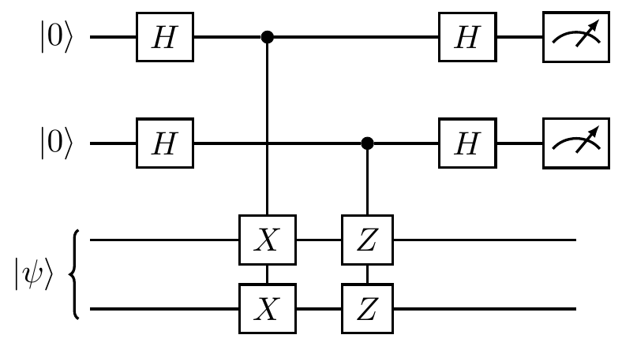
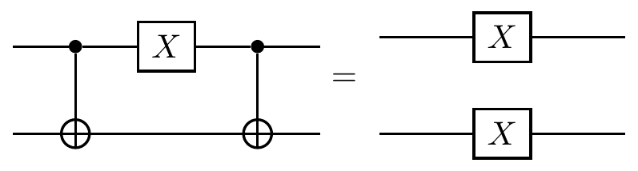
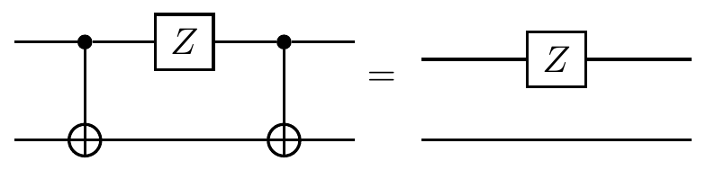
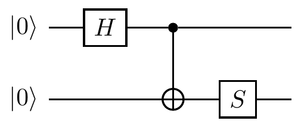

Remarks and exercises
Measuring parity
Suppose you have a two-qubit stabiliser ZZ.
This is an observable that has two eigenvalues and two corresponding eigenspaces, namely the +1 eigenspace spanned by \{|00\rangle,|11\rangle\} and the -1 eigenspace spanned by \{|01\rangle,|10\rangle\}.
This tells us something about the parity of the two qubits: the +1 outcome means that the bit values are the same, and the -1 outcome means that they are different.
However, it is critical that we do not measure the bit values Z\mathbf{1} and \mathbf{1}Z separately and then multiply the results, since this could cause the state to “collapse” to one of the basis states in revealing the exact bit values.
We don’t want this!
We simply want to know the mutual parity of the bit values, not what values they actually are.
Mathematically speaking, the parity measurement ZZ involves two orthogonal projectors
\begin{aligned}
\frac{1}{2}(\mathbf{1}\mathbf{1}+ZZ)
&= |00\rangle\langle 00|+|11\rangle\langle 11|
\\\frac{1}{2}(\mathbf{1}\mathbf{1}-ZZ)
&= |01\rangle\langle 01|+|10\rangle\langle 10|
\end{aligned}
whereas the bit-value measurements Z\mathbf{1} and \mathbf{1}Z are characterised by the four projectors
\begin{aligned}
\frac{1}{2}(\mathbf{1}\mathbf{1}+Z\mathbf{1})
&= |0\rangle\langle 0|\otimes\mathbf{1}
\\\frac{1}{2}(\mathbf{1}\mathbf{1}+\mathbf{1}Z)
&= \mathbf{1}\otimes|0\rangle\langle 0|
\\\frac{1}{2}(\mathbf{1}\mathbf{1}-Z\mathbf{1})
&= |1\rangle\langle 1|\otimes\mathbf{1}
\\\frac{1}{2}(\mathbf{1}\mathbf{1}-\mathbf{1}Z)
&= \mathbf{1}\otimes|1\rangle\langle 1|.
\end{aligned}
In terms of circuits, if we want to measure the parity of two qubits prepared in some state |\psi\rangle, then we can use the circuit
which is different from the circuit which effects the measurement of the individual bit values of the two qubits, namely

When dealing with stabilisers, we prefer to think of the controlled-\texttt{NOT} gate as a controlled-X instead.
We then draw the parity-measurement circuit as
But this is a bit confusing, since we are measuring the Z observable using controlled-X gates.
Thankfully, we can use some circuit/Pauli identities to rephrase things in terms of controlled-Z gates instead:

This is a quantum version of the two-bit parity measurement.
When the auxiliary qubit (now in the top register) is found in state |0\rangle then we projected onto the +1 eigenspace of ZZ, which is spanned by the vectors |00\rangle and |11\rangle; otherwise, we projected onto the -1 eigenspace of ZZ, which is spanned by the vectors |01\rangle and |10\rangle.
The circuit above is more commonly drawn simply as
This scheme can be generalised and used to implement any sequence of Pauli measurements.
For example, the circuit below shows to consecutive measurements: X\mathbf{1}Z followed by \mathbf{1}YZ.

The Pauli group of three qubits
Consider the three-qubit Pauli group \mathcal{P}_3, which has 4\cdot 4^3=256 elements.
One example of a stabiliser group is
\begin{aligned}
\mathcal{S}
&= \{\mathbf{1}\mathbf{1}\mathbf{1},ZZ\mathbf{1},\mathbf{1}ZZ, Z\mathbf{1}Z\}
\\&= \langle ZZ\mathbf{1},\mathbf{1}ZZ\rangle.
\end{aligned}
since it is an abelian subgroup of \mathcal{P}_3 that does not contain -\mathbf{1}\mathbf{1}\mathbf{1}.
You can check that it fixes the subspace spanned by |000\rangle and |111\rangle (and note that you only need to check this on the generators of \mathcal{S}, not for all elements of \mathcal{S}).
We have already seen in Figure 7.1 how these two generators bisect the Hilbert space of three qubits, so now let’s try to understand Figure 7.2 for this specific example.
The elements of \mathcal{P}_3 that commute with the stabiliser \mathcal{S} form the normaliser N(\mathcal{S}).
Since the stabiliser is abelian, it itself is contained inside the normaliser, but there are also elements in the normalised that are not in the stabiliser.
All together, there are 4\cdot16=64 elements in the normaliser, and they can be neatly sliced into cosets of \mathcal{S} in N(\mathcal{S}), as shown in Figure 7.3.
Having pictured the cosets of \mathcal{S} inside N(\mathcal{S}), we can now look at the cosets of N(\mathcal{S}) inside \mathcal{P}_3.
Half commuting
Any Pauli matrix that is not the identity commutes with exactly half of all the Pauli matrices: namely, with the identity and with itself.
For example, X commutes with \mathbf{1} and X, and anticommutes with Y and Z.
Extend this observation to any non-identity element in \mathcal{P}_n.
In other words, show that, for any P\in\mathcal{P}_n\setminus\{\mathbf{1}^{\otimes n}\}, exactly half of the elements in \mathcal{P}_n commute with P.
One out of four stabilisers
Explain why, if S is an element of some stabiliser group, then none of -S, iS, or -iS are in the same stabiliser group.
Stabilisers and projectors
Let \mathcal{S} be a Pauli stabiliser group, with generators G_1,\ldots,G_r.
- Show that \frac{1}{2}(\mathbf{1}\pm G_j) is the projector onto the \pm1 eigenspace of G_j for any j=1,\ldots,r.
- Show that the projector
P = \frac{1}{2}(\mathbf{1}+G_1)\frac{1}{2}(\mathbf{1}+G_2)\ldots\frac{1}{2}(\mathbf{1}+G_r)
onto the simultaneous +1 eigenspace of the generators G_1,\ldots,G_r can be written as
P = \frac{1}{2^r}(S_1+S_2+\ldots+S_{2^r})
where the sum contains all elements S_i of \mathcal{S}.
- The fact that independent generators consecutively bisect the total Hilbert space relies on the fact that, if G_1 and G_2 are independent generators, then G_2 restricted to the +1 eigenspace of G_1 bisects it into two subspaces of equal dimension.
Explain how this fact follows from
\operatorname{tr}\left[
\frac{1}{2}(\mathbf{1}+G_1)G_2\frac{1}{2}(\mathbf{1}+G_1)
\right] = 0
and prove that this trace is indeed zero.
Why do the two generators G_1 and G_2 have to be independent?
Abelian Pauli quotients
Given any group G, we define the commutator [-,-] by
\begin{aligned}
[-,-]\colon G\times G
&\longrightarrow G
\\(g_1,g_2)
&\longmapsto g_1^{-1}g_2^{-1}g_1g_2
\end{aligned}
Now let H\triangleleft G be a normal subgroup, and consider the following theorem.
Theorem. The quotient group G/H is abelian if and only if [g_1,g_2]\in H for all g_1,g_2\in G.
Using this theorem (or otherwise),
- Prove that \mathcal{P}_n/N(\mathcal{S}) is abelian for any Pauli stabiliser \mathcal{S}\leqslant\mathcal{P}_n.
- Prove that \mathcal{P}_n/C_4 is abelian, where C_4\cong\mathbb{Z}/4\mathbb{Z} is given by the global phase.
Equivalent projective measurements
In Section 7.4 we described a generic method for constructing projective measurements of Pauli observables.
However, sometimes it may be easier to use equivalent, simpler constructions.
For example, the following two circuit identities are often used:

These both follows from the fact that HZH=X, and that the control and the target of a controlled-Z gate can be chosen arbitrarily, since the gate itself is symmetric with respect to this choice (the phase flip only happens when both qubits are in state |1\rangle).
![Here we have arranged the elements of the normaliser of \mathcal{S} so that each row represents a coset of \mathcal{S} in N(\mathcal{S}). The quotient group N(\mathcal{S})/\mathcal{S} is isomorphic to the Pauli group \mathcal{P}_1, and you can see this by considering the first column (which is the representative for that row/coset) of the frontmost page: the four operators \mathbf{1}\mathbf{1}\mathbf{1}, XXX, -YYY, and ZZZ behave, algebraically, exactly the same as \mathbf{1}, X, Y, and Z (in that they satisfy the same commutation relations). Note that it is indeed -YYY that behaves like Y, not +YYY.](qubit_guide_files/figure-html/slicing-ns-into-cosets-1.png)
![Here the cosets of the normaliser N(\mathcal{S}) inside \mathcal{P}_3 are given by the representatives \mathbf{1}\mathbf{1}\mathbf{1}, X\mathbf{1}\mathbf{1}, \mathbf{1}X\mathbf{1}, and \mathbf{1}\mathbf{1}X. Each of the four cosets representing an element of \mathcal{P}_3/N(\mathcal{S}) is composed of 16 rows (four in each sheet). These rows represent cosets of \mathcal{S} in \mathcal{P}_3 but we have to be careful: within the normaliser N(\mathcal{S}), these are well defined, but outside of the normaliser there is a difference between left and right cosets, since \mathcal{S} is not normal in \mathcal{P}_3. The blue and red rows are exactly a copy of those from Figure 7.3.](qubit_guide_files/figure-html/slicing-p3-into-cosets-1.png)